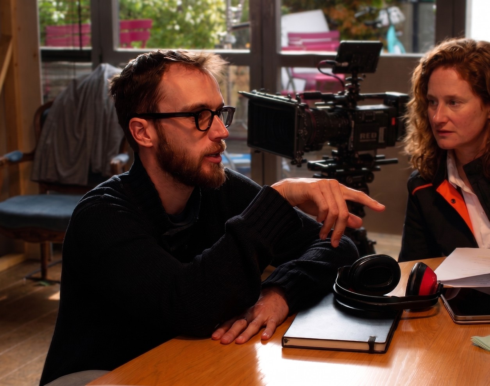

Conférence
illustrée
Des images, des démonstrations et des questions à la salle pour construire la réflexion ensemble.
30–60 min + échangeRéalisateur · Conférences & rencontres
Un montage change le sens d’une scène. Une réponse d’IA semble avoir pensé à tout. Qu’est-ce qui nous fait y croire ?
Réalisateur et formateur, j’explore les liens entre cinéma, médias, intelligence artificielle et esprit critique. D’abord derrière une caméra. Aujourd’hui aussi devant un public.
Pour commencer : une conférence AFDCC, un entretien ARTES et un texte sur la création

02 / UNE PETITE EXPÉRIENCE
Regardez cet homme sur un banc. Puis changez la légende.
Est-ce toujours la même scène, pour vous ?
Scène fictive générée par IA. Les deux légendes sont inventées pour cette expérience.
Rien, dans ce plan, ne permet de trancher entre ces deux histoires. Quelques mots suffisent pourtant à orienter notre lecture. Cela ne mesure pas votre crédulité : cela montre la place que prend le contexte.
Au cinéma, on construit du sens.
Dans l’information, il est utile de regarder comment.
03 / OUVRIR LA DISCUSSION
Des propositions à faire dialoguer avec votre thème, votre public et les autres invités.
Un visage, deux montages, deux interprétations. Le cinéma sait depuis longtemps nous faire compléter ce qu’il ne montre pas. Que nous apprend cette expérience sur la confiance que nous accordons aux contenus générés par IA ?
Une conférence illustrée pour observer le cadre, le hors-champ et le point de vue. Le cinéma sert ici à éclairer notre regard ; les modèles d’IA ont, eux, leur propre fonctionnement.
Parlons de ce sujetUne photographie authentique peut raconter une histoire fausse. Il suffit parfois d’une date effacée, d’une légende ajoutée ou d’un plan coupé trop tôt.
À partir d’exemples de cadrage, de montage et d’images synthétiques, on examine ce qui constitue une preuve. L’enjeu : apprendre à chercher une origine et un contexte, sans attendre de notre œil qu’il détecte tout.
Parlons de ce sujetUne image spectaculaire apparaît en quelques secondes. On reconnaît des styles, des références, parfois des habitudes visuelles un peu trop familières. Où se situe alors le travail de création ?
Intention, choix, imitation, contraintes : une conversation sur ce que les outils génératifs déplacent dans la pratique des artistes et des créateurs. Avec une place pour les possibilités nouvelles autant que pour les objections.
Parlons de ce sujetLa réponse est claire, structurée, convaincante. C’est justement le moment où l’on peut oublier de demander ce qui manque.
À partir d’un dossier et d’un vote du public, on regarde comment une recommandation devient une évidence. Puis on remet les informations absentes dans le cadre, et la décision en discussion.
Parlons de ce sujet04 / LE TEMPS DE LA RENCONTRE
Des images, des démonstrations et des questions à la salle pour construire la réflexion ensemble.
30–60 min + échangeUn regard de réalisateur en dialogue avec des chercheurs, journalistes, artistes ou auteurs.
Selon votre programmationRegarder un même plan autrement, tester un montage, interroger une réponse : une idée mise à l’épreuve.
20–45 min · participatifVous cherchez aussi à faire dialoguer vos invités ? Nous pouvons envisager une modération, en précisant ensemble le sujet et la préparation nécessaire.
Construisons le formatPublic. Les conférences sont pensées pour des non-spécialistes. Le vocabulaire, les exemples et la place du débat s’adaptent à l’événement. Pour un public scolaire, l’âge et les objectifs sont à préciser ensemble.
Matériel. Prévoir un écran ou vidéoprojecteur, une diffusion sonore pour les extraits et un micro selon la salle. Les démonstrations peuvent être préparées à l’avance pour fonctionner sans connexion.
Préparation. Un échange permet de fixer l’angle, la durée, les conditions de projection, l’accessibilité et les modalités de captation. La proposition et les conditions d’intervention sont établies à partir de ce cadre.
05 / QUELQUES TRACES
Une intervention, une conversation et un texte pour vous faire votre propre idée.
CONFÉRENCE · 01.10.2026
Une intervention construite sur les codes du cinéma, annoncée par l’AFDCC à Orvault.
Voir la présentation de l’organisateur ↗À ÉCOUTER · 15.04.2026
Un entretien sur les usages de l’IA, l’approche pédagogique et la place d’une pratique raisonnée.
Écouter chez ARTES ↗ARTICLE · 21.08.2026
Une réflexion sur les images générées, l’intention et ce que l’on attend du travail créatif.
Lire sur LinkedIn ↗« Il sait créer un cadre de confiance tout en étant exigeant. »
06 / LE REGARD
Depuis Nantes.
Vers d’autres points de vue.
Je m’appelle Albin Blanchère. Je travaille dans l’audiovisuel depuis près de vingt ans.
Réalisation, cadrage, montage, production : j’ai appris à faire tenir une histoire dans un cadre. Et à voir tout ce qu’il fallait laisser de côté pour y parvenir.
Aujourd’hui, je transmets aussi ce regard à des étudiants, des enseignants et des professionnels, à travers des interventions sur l’esprit critique, les images et les intelligences artificielles.
Ce qui m’intéresse, c’est le moment où une représentation devient une évidence. On croit avoir tout vu. Puis quelqu’un montre un autre plan, pose une question, apporte une information. Et il faut reprendre.
J’aime ces moments-là. Ils font souvent de bonnes rencontres.
07 / ET SI ON EN DISCUTAIT ?
Un festival, une rencontre en médiathèque, une table ronde, un cycle universitaire… Dites-moi ce que vous préparez et pour quel public. Nous chercherons le bon angle ensemble.
albin.blanchere@ootbox.infoBasé à Nantes · Grand Ouest & France
La fiche intervenant, à garder ou à imprimer ↗Relisez-le, puis ouvrez votre messagerie pour l’envoyer.